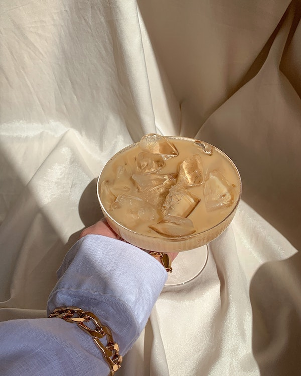

- Jewelry Trends of the season:
It is easy to get caught up in revamping your wardrobe to fit the season’s latest trends. But, remember, jewelry is often what makes and completes an outfit. To keep your fashion simple, grab your favorite black sweater or white button-down and shift your energy to focus on the jewelry trends for 2023. Here if the three biggest jewelry trends expected to shine throughout 2023.
Cuffs: A silver or gold cuff is the perfect example of a way to make a subtle statement with just one piece. Cuff bracelets are proving themselves to be the easiest way to elevate any look.

Beads necklaces Thinly beaded necklaces are the perfect trend for layering experts. Whether you’re stacking multiple strands of the same beads, mixing and matching, or just letting a singular strand speak for itself, this boho trend is a casual way to accessorize. Take notes from Blumarine, the totally Y2 K-inspired brand, and add a charm to a beaded strand, or get inspired by Coach’s quirky decision to add unusual objects to a long strand like a sports whistle. You don’t need to wear a flower crown or long skirt for beads to work with your outfit.